TETRATetrahedron Fascination
Discovery Time-line
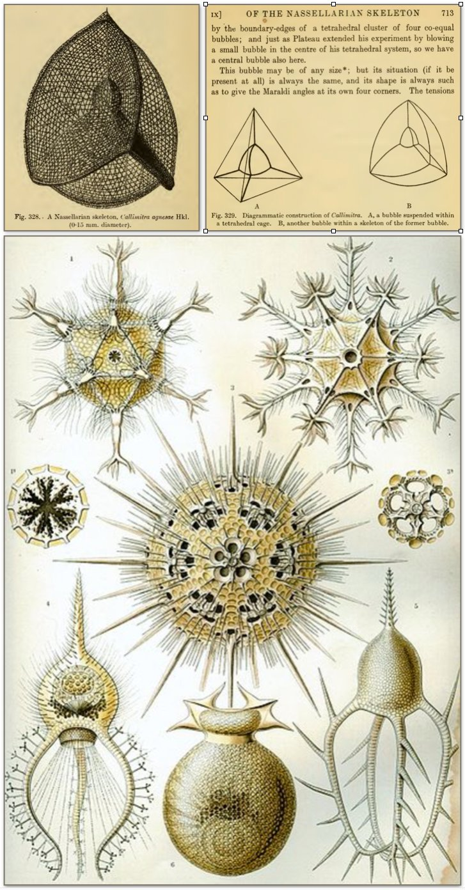
For over 50+ Years ..... I have been on a journey of wonder & discovery, exploring and advancing the understanding of Tetrahedal Geometry and its unique primordial morphology... especially as it relates to consciousness, creativity and universal patterns of self-organization.
1966On Growth & Form
"On Growth and Form", the seminal text on biological morphology written by the mathematician & biologist, D'arcy Thompson. This was my first look at polyhedral forms and in particular, tetrahedral morphology.
As I opened the thick book for the first time I found myself staring at this particular page looking at the most beautiful structures I had ever seen!
I was mesmerized and captivated by these amazing drawings by Ernst Haeckel of Radiolaria, in 1904.
I remember being stunned by their beauty and in particular the recognition for the first time of a "Spatial Symmetry" in the natural world beyond the usual 90º cartesian coordinate system of space.
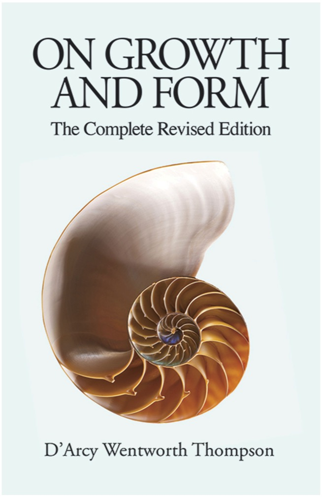
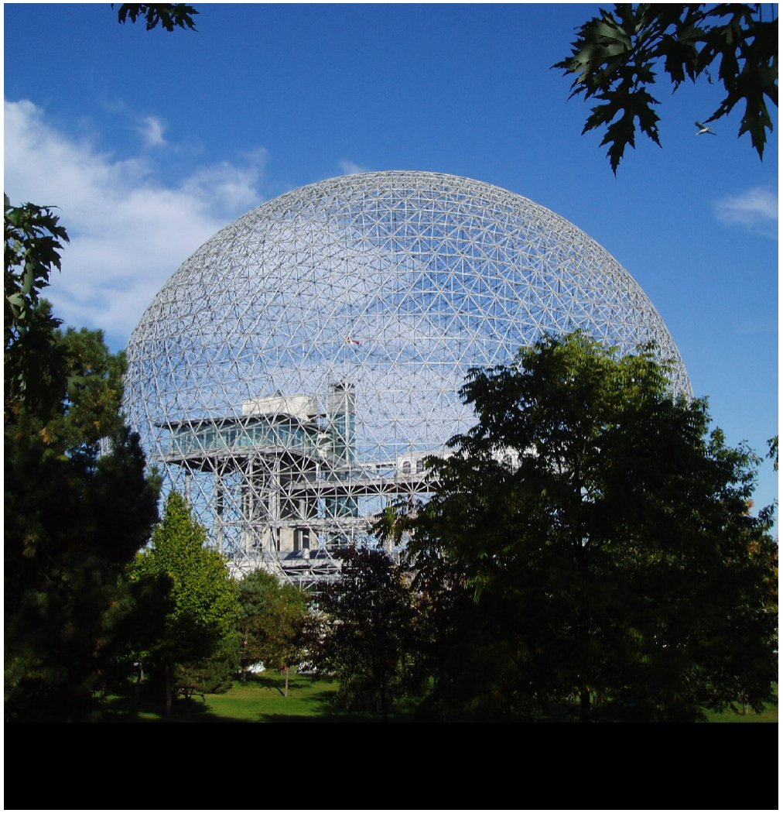
1967World's Fair Expo-'67
In 1967 I discovered the amazing design work of Inventor & engineer Buckminster Fuller while visiting the "Bio-Sphere" Dome at Expo 67 in Montreal, Canada.
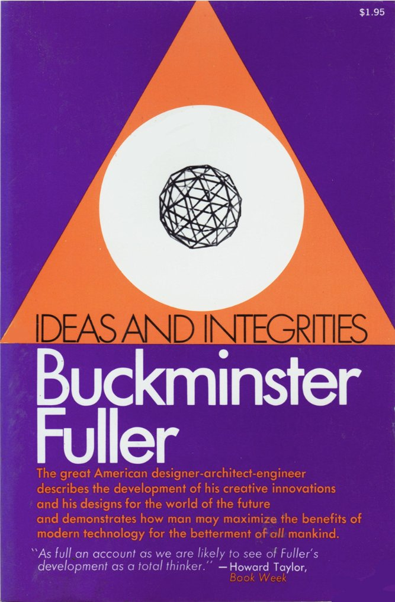
1986 - Synergetics
After the Kundalini Awakening in 1985 I was obsessed with reading all the works of Buckminster Fuller, and took a a new and closer look at Bucky Fuller particularly in his book "Synergetics". In 1987 I visited Arthur Loeb at Harvard, Bucky's co-author of that amazing tome. Arthur invited me to present my geometric explorations to his class, especially the presence of the Golden Mean in tetrahedral forms. Later that night, Arthur invited me to dinner at a "Puzzle Competition" and we discussed Bucky's idea of a universal creative intelligence and his belief in what Biucky had called... "The Invisible Circuitry of Nature"
The introduction of the idea of the Divine Proportion in Architecture & the questioning of where it was hidden or displayed in Natural & Biological Forms....Starting with DNA.
1970
The era of Dome-Books and Geodesic Math & other polyhedral geometries in the areas of structure and shelter. During this time I built many models if domes and several full-size structures purposed for everything from Art & Photography Exhibits to Personal Shelters. I never tire of the incredible beauty of the soaring spaces they enclose and the sense of integrity they establish on any site or in any environment.
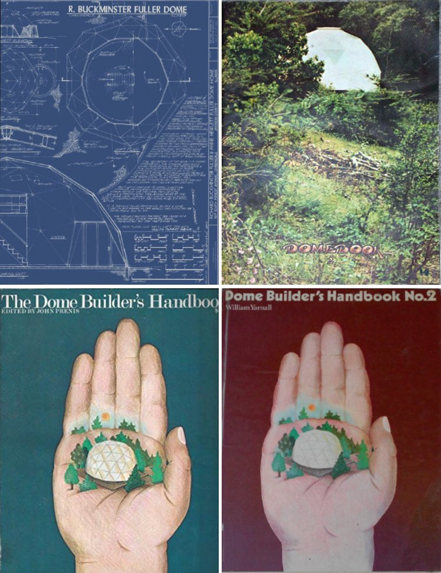
1974
Industrial Design Model Making & Design Competitions
Triangular "Data" Package
Computer Loops
During this era of Dome-Books, Geodesic Math & other polyhedral geometries I was a student in Industrial Design focused in the areas of structures and shelters. When I look back at many of these designs I see a progression of an idea that was slowly unfolding within the context of each new creative expression, always with respect to triangulation and tetrahedrons.
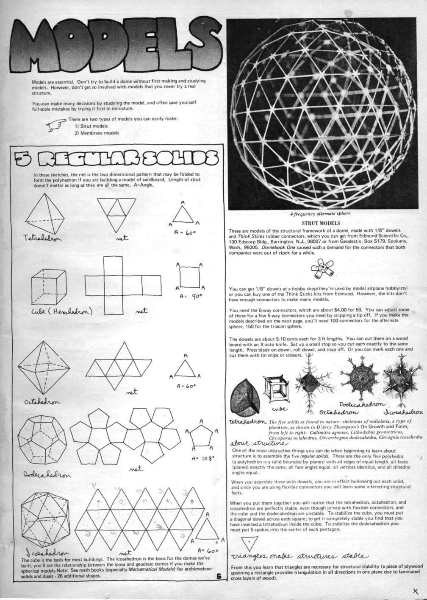
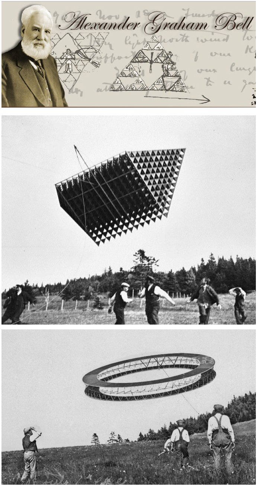
1970 - Tetrahedron Kites!
My first year in College was an incredible
experience! Among the amazing connections I made was with a new friend and classmate, Mark Ward. Mark was interested in all kinds of structures from greenhouses to Kites!
Mark had built a very large tetrahdron kite to test at the shore not far away. It was fashioned after the type that Alexander Graham Bell use to build to demonstrate and explore its powerful lifting capabilities.
I encourage anyone even remotely interested in structures... or inventions... to read the biography on Alexander G. Bell entitled,
"Genius At Work".
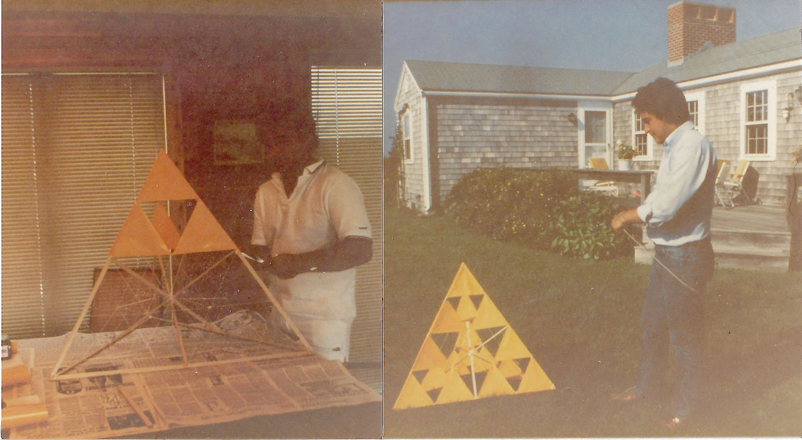
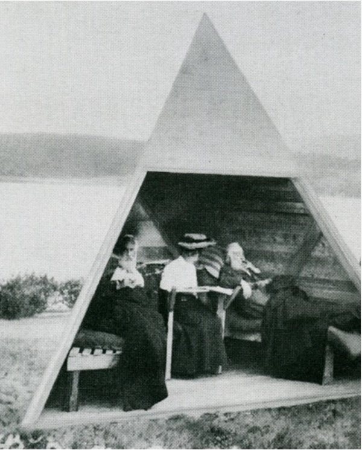
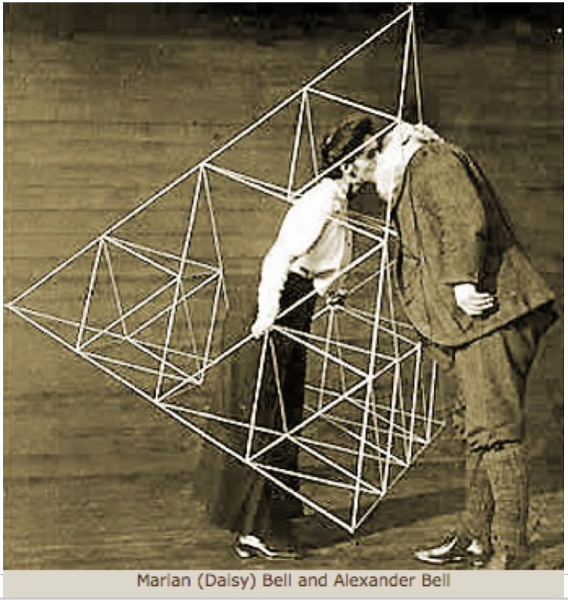
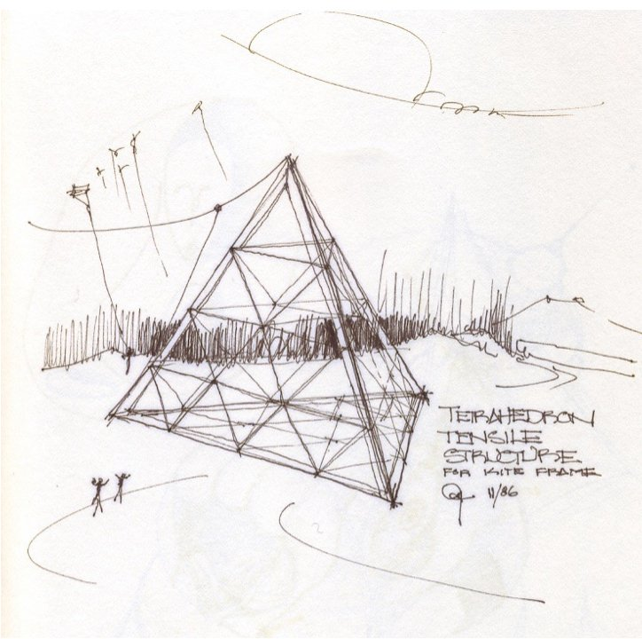
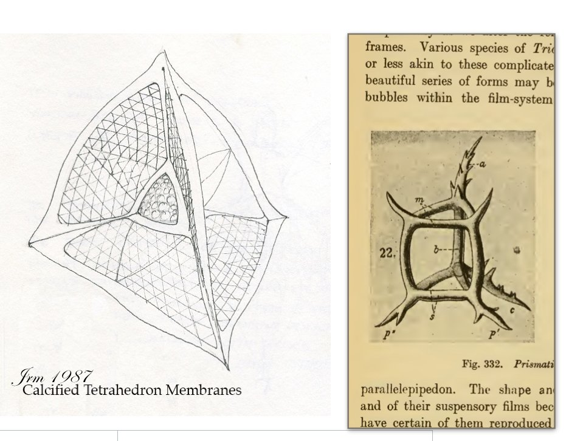
Tetrahedral Drawings Galore!
After the Kundalini Awakening I was compelled to draw these sketches one day reminding me of Alexander Graham Bell and his work with Tetrahedral Kites. This is a sketch of a 4-frequency lightweight kite which I built in 1978 from balsam wood and string.
I would also pass the time drawing images both remembered and imagined, to try and capture the essence of those beautiful drawings by Herschel in "On Growth and Form" that I had first seen in 1968 in High School.
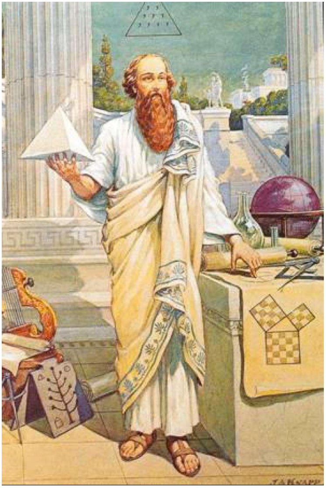
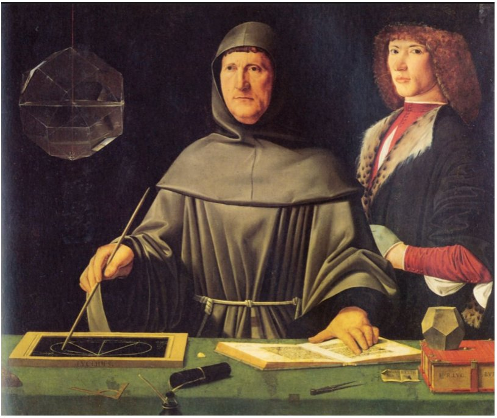
1987
Divina Proportione
In my first year of architecture school I became fascinated with the application of mathematics and Proportion
While researching the literature about the golden mean ratio and the Fibonacci series, I discovered the rare book written by the first chair of mathematics during the Renaissance entitled "The Divine Proportion".
The book is also replete with illustrations of the Platonic solids by Leonardo Davinci, wherein it is clear that Leonardo built models, and hung them in front of him in order to draw them accurately.
Pythagoras
"LET NO-ONE IGNORANT OF GEOMETRY
ENTER HERE!
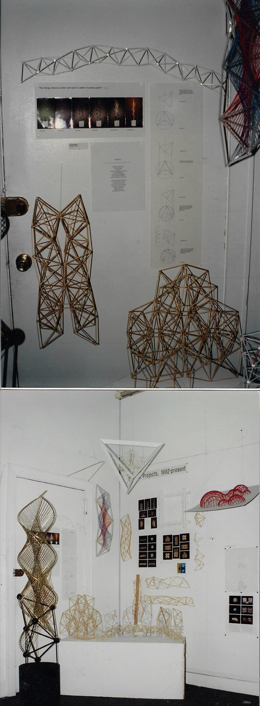
CONTACT !
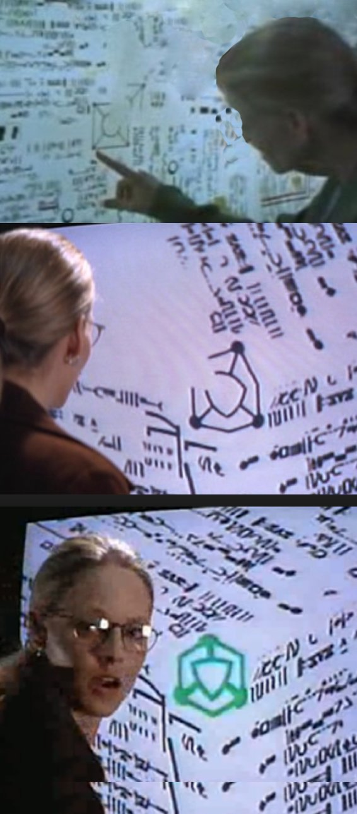
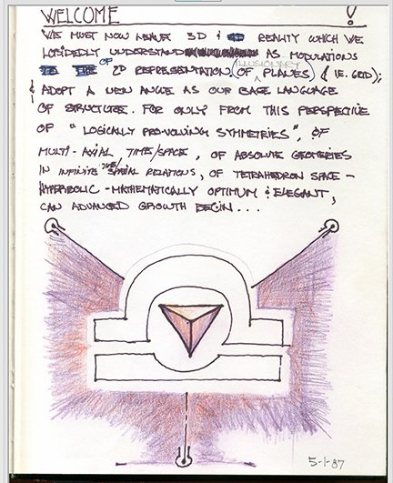